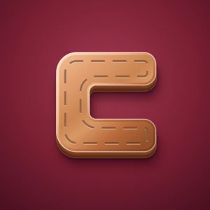
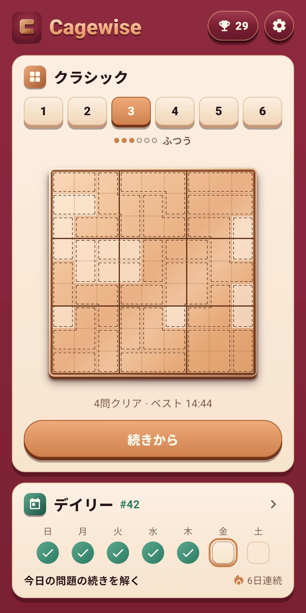
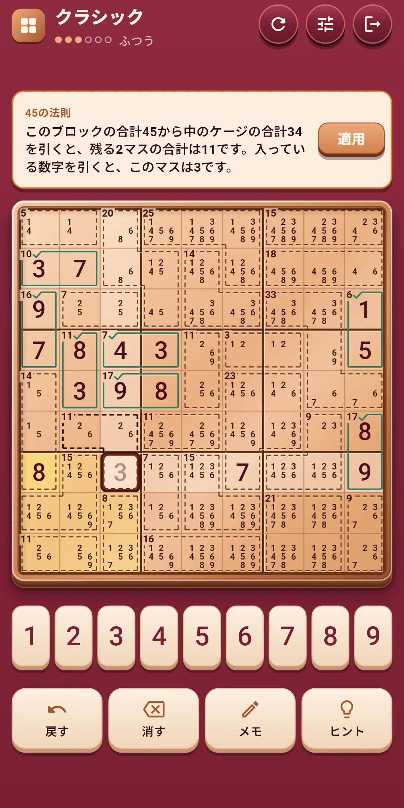
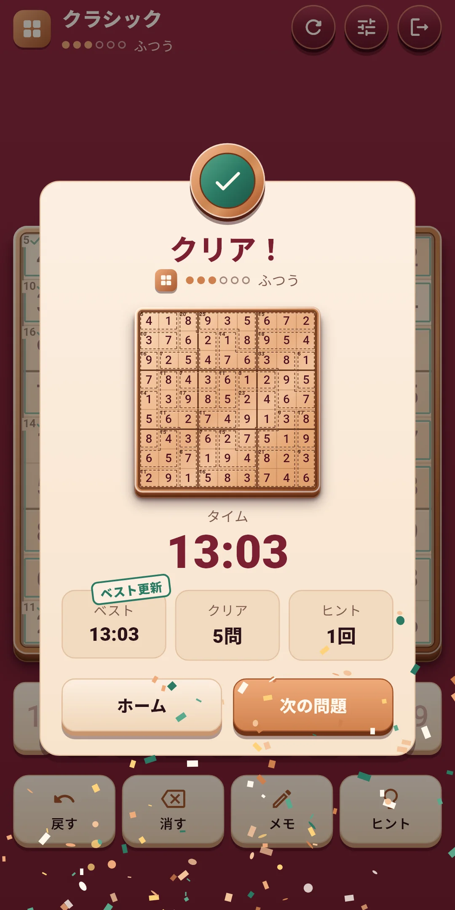
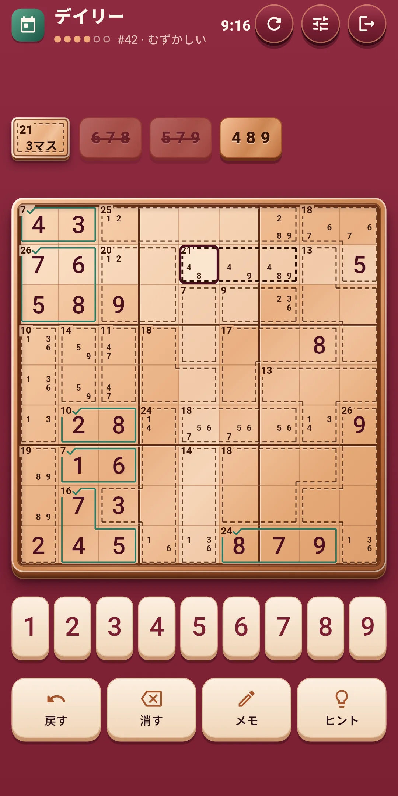
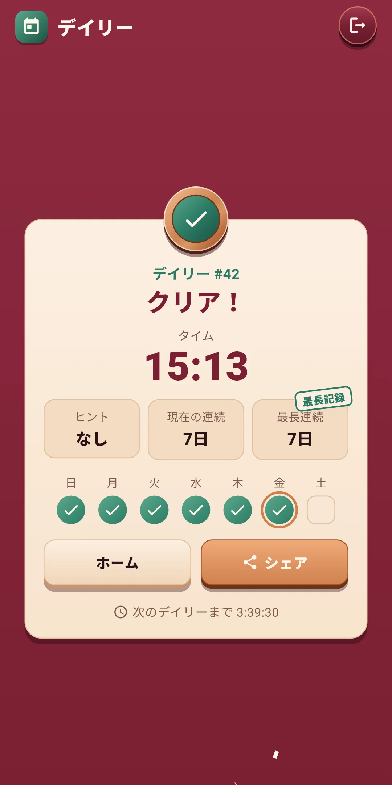
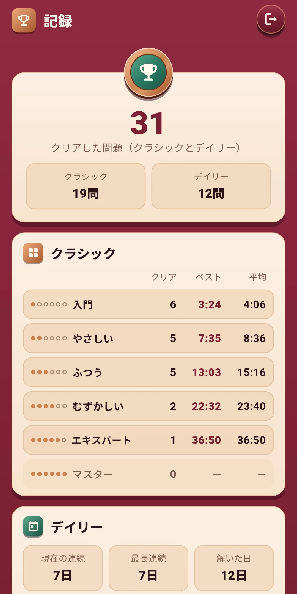
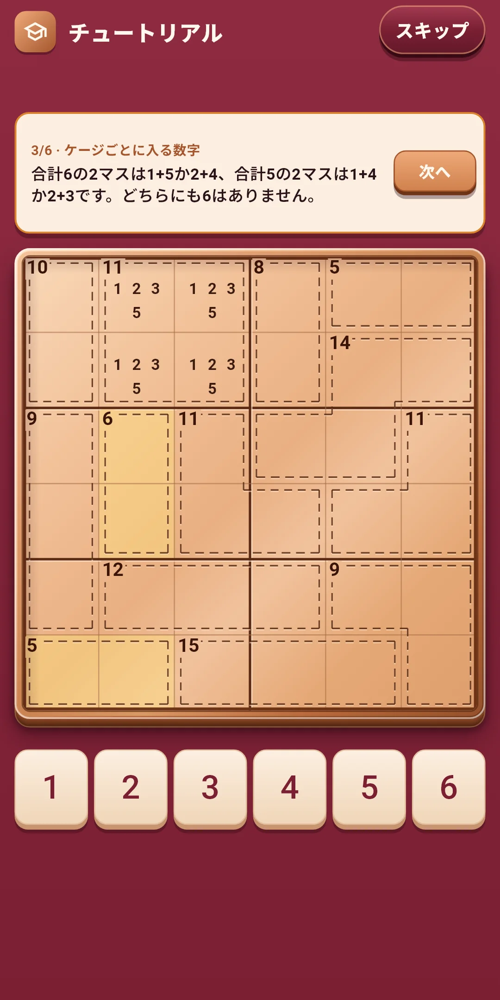

遊び方







| アプリ名 | Cagewise |
|---|---|
| バージョン | 1.0.1 |
| 開発 | Willee Project |
| 対応プラットフォーム | Android |
9×9の盤面に1〜9を入れるナンプレに、ケージ（点線で囲んだマスのまとまりと、その合計）を加えた論理パズル、キラーナンプレです。ケージの合計を手がかりに、順に考えていけば解けます。
チュートリアルが6×6の盤面で見せる3つです。ヒントではケージの組み合わせ、隠れシングル、45の法則という名前で出てきます。
もっと難しいコツは、ヒントが理由といっしょに教えてくれます（4章）。
下のボタン:
| ボタン | すること |
|---|---|
| 戻す | 最後にしたことを1つずつ戻します。回数無制限です |
| 消す | 選んだマスの数字やメモを消します |
| メモ | メモの書き込みをオン・オフします |
| ヒント | 次にすることを理由といっしょに教えます。回数無制限です（4章） |
上の行の右にあるやり直す（↻）ボタン:
| 選ぶもの | 内容 |
|---|---|
| この問題を最初から | 入れた数字とメモをすべて消して最初に戻します。クラシックはかかった時間とヒントも最初から数え、デイリーはその日の時間とヒントをそのまま数えます。まだ数字もメモもなければ薄く表示されて押せません |
| 新しい問題（クラシックのみ） | この問題をやめて、同じ難易度の別の問題を解きます。やめた問題はクリアに数えません |
その隣のクイック設定ボタンは、効果音・バイブレーション・演出・盤面の設定（5章）をゲーム画面のまま変えられる画面を開きます。上のほうを押すか、下に引くと閉じます。いちばん右は終了（ドアの形）で、終了しても解いている問題は自動で保存されます。
ヒントボタンが、次にすることを2段階で教えます。ヒントは回数無制限で無料です。
設定の盤面と入力とアシストでオン・オフします。ゲーム中はクイック設定ですぐに変えられます。
Cagewise Daily #12 ✅ 18:41 ヒント1回 🔥 5日連続
#12はデイリーの番号で、その隣はかかった時間（分:秒）です。2行目は使ったヒントの回数（なければ「ヒントなし」）、3行目は連続記録です（2日以上のときだけ）。1行目はどの言語でも同じです。番号は配信開始日が#1で1日ずつ増えるので、番号が同じなら同じ問題です。
ホーム右上のトロフィーボタンで開きます。ボタンにはクリアした問題の数が出ます。
ホーム右上の歯車で開きます。グループは4つです。ゲーム中はクイック設定ボタンで、前の3つのグループをすぐに変えられます。
| 項目 | 内容 |
|---|---|
| 効果音 | 数字を入れる・消すとき、ケージ・行・ブロックが完成したとき、問題を解いたときなどの音をオン・オフします。行やブロックが続けて完成すると、音が1音ずつ高くなります |
| バイブレーション | 数字を入れる・消すときは軽く、ケージや行・ブロックが完成すると強く、問題を解くと長く震えます。オン・オフします |
| エフェクトを減らす | すべての演出をまとめて控えめにします。オンの間は下の3つの演出ボタンがオフの見た目で薄くなります。端末のアニメーションを無効にする設定にも従います |
| 動き・光・紙吹雪 | 3つのボタンをつないだ帯で、演出ごとにオン・オフします。オンのボタンにはチェックが付き、長押しすると説明が出ます。動きは入れた数字と完成したケージ、光は行・ブロックの完成と問題のクリア、紙吹雪は問題を解いたときです。盤面全体が揺れる演出はありません |
| 項目 | 内容 |
|---|---|
| 数字を大きく | 盤面の数字を大きく表示します。最初はオフです |
| 数字を先に選ぶ | 数字を先に選び、マスを押して入れます。最初はオフで、マスを先に押す方法が標準です |
| メモの自動整理 | 数字を入れると、行・ブロック・ケージのメモから消します。最初はオンです |
| 同じ数字をハイライト | 選んだ数字を盤面で光らせます。最初はオンです |
| 項目 | 内容 |
|---|---|
| ルール違反を表示 | 重複した数字と合計を超えたケージを示します。最初はオンです |
| ケージの組み合わせ表示 | 選んだケージに入る数字の組み合わせを表示します。最初はオンです |
| ミスをすぐに表示 | 答えと違う数字をすぐに表示します。最初はオフです |
| 項目 | 内容 |
|---|---|
| 言語 | 端末の言語に従う（最初の設定）か、一覧から選びます |
| プライバシー設定 | 広告の同意画面をもう一度開きます。同意が必要な地域（ヨーロッパなど）でだけ表示されます |
| 遊び方 | チュートリアルをもう一度見ます |
| このアプリについて | バージョン、この説明（遊び方）、プライバシーポリシー、オープンソースライセンス |